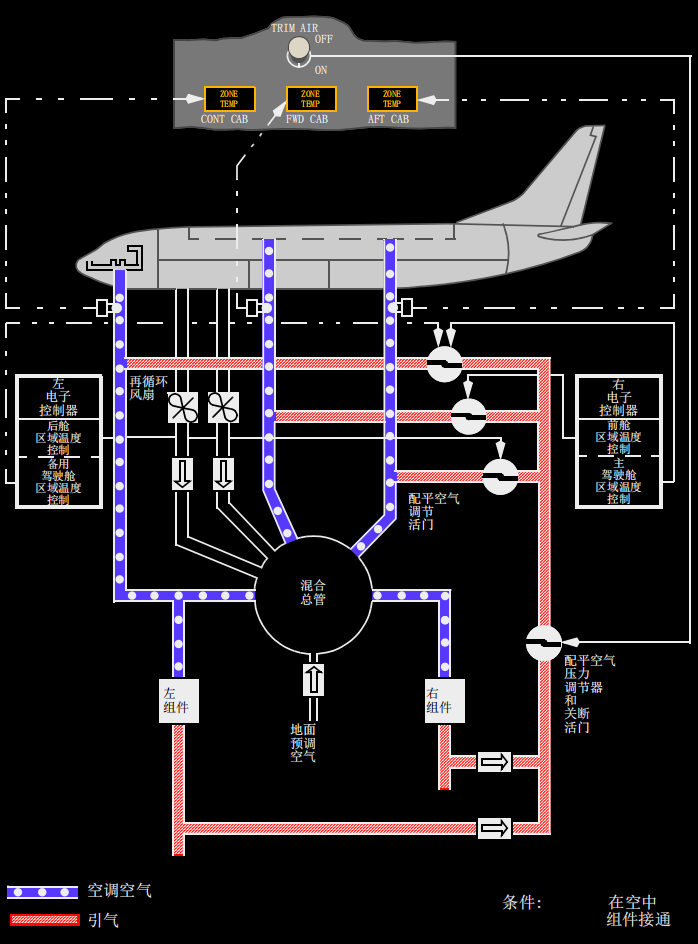

系统说明:
介绍
空调系统通过处理来自发动机，APU的引气或空调组件中的地面气源，提供温控空气。左侧组件的空调气在混合气总管上游，直接向驾驶舱供气。左侧组件中的剩余空气和右侧组件中的空调气以及再循环系统中的空气在混合气总管中汇合。然后混合空气分流至客舱的左右侧壁送风管。
机舱空调来自飞机空调系统或者预调的地面气源。地面预调空气通过混合气总管进入空调系统。
冷却循环
引气流经一个热交换器开始进行气流的冷却循环。然后，气流流向空气循环器制冷。处理后的冷空气再与旁通空气循环的热空气混合，流入高压水分离器除去水蒸汽。调节后的空气流入混合气总管和分配系统。
通过安装在冷却循环中的温度传感器来提供过热保护。过热会使组件活门关闭并使组件（PACK）指示灯亮。

区域温度控制
飞机上有三个区域: 驾驶舱 (CONT CAB), 前客舱 (FWD CAB) 和后客舱 (AFT CAB).需要的区域温度通过调节独立的温度选择器而设定。选择范围大约从65°F（18℃）到85°F（30℃）。
组件产生满足最致冷区域要求的空气温度。通过向区域供应管道输入适量的配平空气就可以控制区域温度。单独的配平空气调节活门调控配平空气量。
单组件工作期间，配平空气（TRIM AIR）选择ON时，区域温度控制与两组件工作时相同。单组件工作期间，配平空气（TRIM AIR）选择OFF时，组件会试图产生满足所有三个区域平均温度需要的空气温度。
如果一个区域供应管道的空气过热，相关的琥珀色区域温度（ZONE TEMP）灯亮，且相关的配平空气调节活门关闭。配平空气调节活门在管道冷却后按压跳开重置（TRIP REST）电门即可重新打开。
区域温度控制方式
左电子控制器控制后舱区域并提供驾驶舱的备份控制。
右控制器控制前舱区域并提供驾驶舱的主控制。
驾驶舱温度主控制器失效会引起自动电门转换至备用控制，并且在主警戒再现时，CONT CAB琥珀色ZONE TEMP 指示灯亮。主控制器和备用控制器均失效则会使灯自动亮。
前或后客舱温度控制失效会引起相关的配平空气调节活门关闭。温度选择器工作正常，但会对两个客舱区域的温度选择器的调定值进行平均。主警戒再现时琥珀色ZONE TEMP指示灯会亮以指示相关的区域控制失效。
不平衡组件温度控制方式
任何影响到配平空气供应的失效都将会引起温度控制系统独立地控制两个组件。如驾驶舱配平空气丧失，左组件将提供给驾驶舱选定温度的空调气，右组件则满足客舱区域最致冷的需求。如一个客舱区域配平空气或所有配平空气丧失，前后区域的温度要求将由右组件的控制而平均。
如断开任一独立区域，温控系统将忽略温度选择器的设定值。
备用组件平均温度
如所有的区域控制和主组件控制失效，备用组件控制要求组件产生空气温度以满足两个客舱区域的平均温度要求。配平空气调节活门会关闭。驾驶舱区域温度选择器对备用组件控制没有影响。
固定座舱温度
如所有温度选择器定于OFF位，组件控制将会使左组件保持固定的温度75°F (24°C)并且右组件保持65°F (18°C)，这可由组件温度传感器测出。
空调分配
空调空气被集中在混合总管内。空气的温度与温度选择器调定值有直接关系。
过热探测是由位于组件和混合总管下游的温度传感器提供的。过热状态使相应的配平空气调节活门关闭以及区域温度（ZONE TEMP）灯亮。
驾驶舱
由于驾驶舱只需要一小部分由左组件提供的空气，因此左组件输出的空气大部分流向混合总管。
驾驶舱空调空气分别流入几个送风管，这些送分管出口分别位于地板、舱顶和脚部。每个座椅下的地板上都有几个空气扩散器，只要总管内有压力，空气就不断流出。
舱顶空气扩散器位于驾驶舱顶部3号风挡的后上方。每个出口都可由一个有槽的调整旋钮旋转调节，按需打开或关闭。
每个飞行员方向舵脚蹬后部都有一个双功能活门。这些活门提供的气流可为飞行员足部供暖，并为1号风挡内表面除雾。每个活门由机长和副驾驶面板上的拉手控制。
客舱
客舱供气分配系统由混合总管、侧壁送风管和一个顶板分配管道组成。侧壁送风管向上延伸到左右侧客舱壁，为顶部分配管道供气。舱顶分配管道将空调空气送至客舱。舱顶分配管道沿着飞机中心线从客舱顶部前端延伸到后端，并为侧壁扩散口供气。

再循环风扇
再循环风扇系统可减轻空调组件的负荷并减少发动机引气的需求量。客舱和电子设备舱排出的气体收集在前货舱中，然后在此经过过滤，再循环，重新回到混合空总管。风扇由交流马达驱动。仅当各自的再循环风扇（RECIRC FAN）电门在AUTO时，该再循环风扇才会工作。
在飞行中，如两组件（PACK）都工作，则左再循环风扇工作，除非任一个组件（PACK）电门在HIGH位。飞行中如两组件（PACK）都工作，则右再循环风扇工作，除非两组件（PACK）电门均在高流量位。
在地面上，除了两组件（PACK）电门都在HIGH位，左再循环风扇都会工作。 即使两组件电门都在HIGH位，右再循环风扇也会工作。
设备冷却
设备冷却系统冷却驾驶舱和电子电气设备（E & E）舱内的电子设备。 设备冷却系统由供气管道和排气管道组成。每个管道都有一个正常风扇和一个备用风扇。
供气管道向驾驶舱显示器和电子电气设备（E & E）舱内的电子设备提供冷空气。
排气管道收集并排放来自驾驶舱显示器、顶板和后电子面板、驾驶舱电路跳开关面板，以及电子电气（E & E）舱内电子设备的热空气。
如设备冷却风扇失效而丧失冷却气流，则相应的设备冷却关断（OFF）灯亮。选择备用风扇可恢复冷却气流，并使关断（OFF）灯在约5秒内熄灭。
(部分选型)如出现前货舱火警，则设备冷却排气风扇关闭，且设备冷却排气关闭（OFF）指示灯受抑制。
如在地面发生超温情况，前轮舱内的机组呼叫喇叭会发出报警。
前货舱
再循环风扇系统使气流从客舱中流出并沿着前货舱的舱壁衬垫流动。当机外排气活门关闭时，从设备冷却系统排出的气流也向前货舱壁衬垫内扩散，以进行辅助的飞行中增温。
空调气源连接
地面空调气源可以连接到混合空总管上，以便向整架飞机分配预调空气。